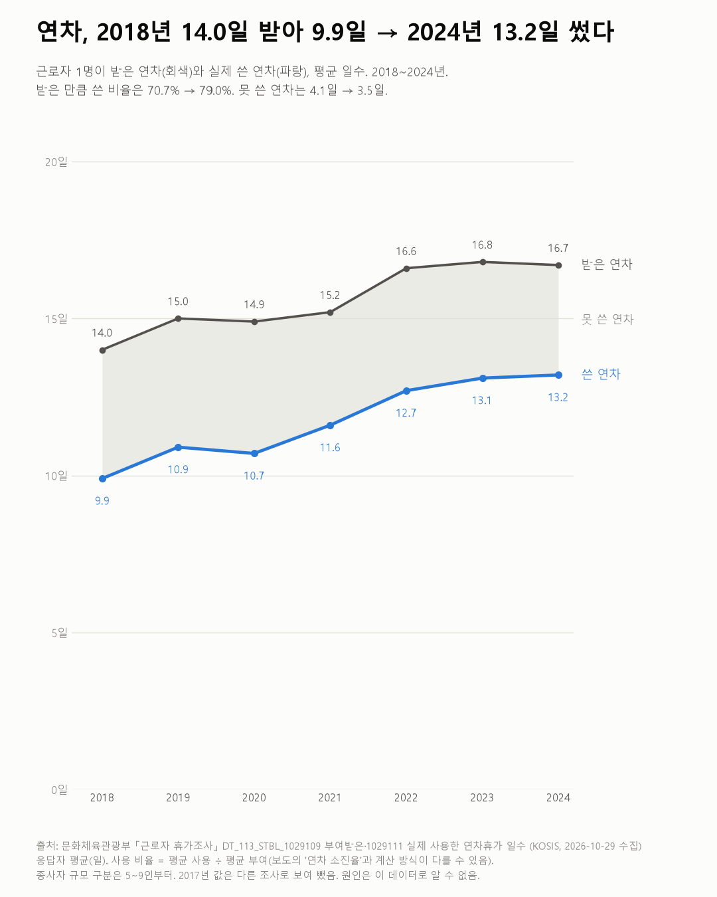
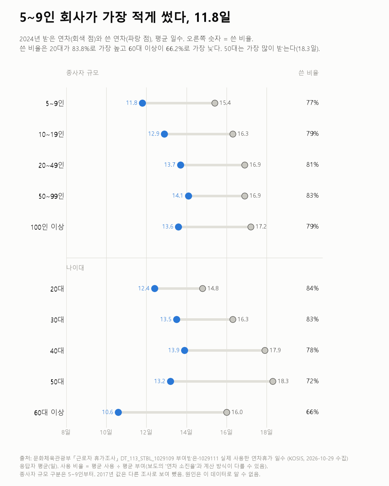

연차, 2018년 9.9일 → 2024년 13.2일 썼다
근로자 휴가조사

질문
직장인은 연차를 며칠 받고 며칠 쓰나? 2018년부터 2024년까지 어떻게 바뀌었나? 회사 규모·나이대별로 다른가? 다 못 쓴 사람은 왜 못 썼다고 하나?
사용 데이터와 출처
| 데이터 | 출처 | 쓰임 |
|---|---|---|
| 부여받은 연차휴가 일수 (KOSIS DT_113_STBL_1029109) | 문화체육관광부 「근로자 휴가조사」 | 평균 일수·분포, 성별·나이대·규모 |
| 실제 사용한 연차휴가 일수 (KOSIS DT_113_STBL_1029111) | 같은 조사 | 평균 일수·분포 |
| 연차휴가 사용하지 못한 이유(1순위) (KOSIS DT_113_STBL_1029135) | 같은 조사 | 연차를 다 쓰지 못한 근로자의 응답 |
- 쓴 비율 = 평균 사용일수 ÷ 평균 부여일수. 보도의 '연차 소진율'과 계산 방식이 다른 것으로 보인다(보도 2025년 79.4%·전년보다 1.6%p 상승 → 2024년 약 77.8%, 이 글의 2024년 값 79.0%). 두 값을 섞지 않는다.
- 2017년은 뺐다. KOSIS엔 2017년 값이 있지만, 보도가 이 조사를 '2018년 시작'이라 하고 2017년 보도 수치(20~59세 1,000명 조사, 부여 15.1일·사용 7.9일)와 KOSIS 값(14.6일·8.5일)이 달라 다른 조사로 봤다.
- 검증: 해마다 분포(5일 미만·5~15일·15일 이상) 합이 100%(±0.1)인지, 못 쓴 이유 합이 100%(±0.2)인지 확인했다.
- 교차 확인: 부여·사용 일수 자체는 보도에서 찾지 못했다. 2025년 조사 결과는 아직 KOSIS에 없다.
- 수집일: 2026-10-29 (KOSIS 오픈API).
인사이트
1. 근로자 1명이 실제로 쓴 연차는 2018년 9.9일에서 2024년 13.2일로 늘었다. 받은 연차는 14.0일에서 16.7일이 됐다.
2. 받은 만큼 쓴 비율은 70.7%에서 79.0%로 올랐다. 못 쓴 연차는 4.1일에서 3.5일로 줄었다.
3. 5일도 못 쓴 사람은 20.3%에서 6.2%로 줄었다. 15일 이상 쓴 사람은 30.9%에서 56.6%가 됐다.
4. 5~9인 회사가 가장 적게 썼다(2024년 11.8일). 받은 연차도 15.4일로 가장 적다. 50~99인 회사가 14.1일로 가장 많이 썼다.
5. 쓴 비율은 20대 83.8%, 60대 이상 66.2%다. 50대는 가장 많이 받지만(18.3일) 쓴 비율은 72.1%다.
6. 다 못 쓴 이유 1순위(2024년)는 연차 수당을 받아서(17.2%), 대체 인력 부족(15.2%), 휴가 계획 없음(15.0%), 업무량 과다(13.5%) 순이다. '상사의 눈치'는 2018년 6.5%에서 1.9%로 줄었다.

한계
이 데이터로 말할 수 없는 것
- 응답자가 답한 평균이다. 회사 기록이 아니다.
- 평균끼리 나눈 비율이다. 사람마다 쓴 비율의 평균과 다르다.
- 이유 문항은 2023년부터 '기타'가 크게 늘었다(0.4% → 9.1%). 2024년엔 항목 이름도 바뀌었다(통계표 주석). 이유의 연도 비교는 조심해야 한다.
- 규모 구분은 5~9인부터다. 5인 미만 회사는 이 표에 없다.
- 연차를 쓰라거나 쓰지 말라는 글이 아니다. 원인도 말하지 않는다.
전제 기록
데이터를 보기 전에 적어둔 것, 그리고 보고 나서 바꾼 것
- 전제 기록(premises)(데이터를 받기 전에 작성)를 따랐다. 받은 뒤 보도와 대조하다 2017년이 다른 조사로 보여 기간을 2018~2024년으로 줄였고, 그 이유를 premises.md에 남겼다.